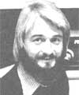
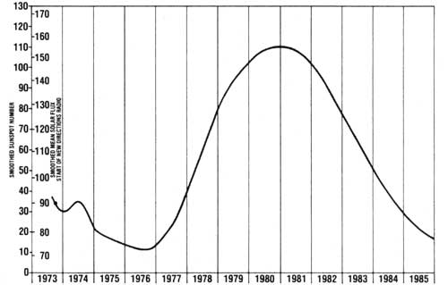

Good news for all you New Directions hams (and would-be hams) out there: Long-distance radio communication conditions are good and getting better. The overall trend-despite the usual wide variations in conditions from day to day-is definitely up.
As you may or may not know, the very highest part of the earth's atmosphere-the ionosphere-acts like a mirror to radio waves of certain frequencies ... it actually reflects the waves back to earth. Normally, transmission distances of up to about 2,300 miles can be covered by a single reflection. When conditions are just right, however, that radio signal can keep on bouncing between the ionosphere and the earth until it goes halfway around the world.
Scientists don't yet have all the facts, but it looks as though very short wavelength ultraviolet light may be what turns the upper atmosphere into a reflecting shell of charged particles. In any event, it is clear that conditions on the sun determine whether or not the ionosphere will behave like a good mirror. Good radio conditions seem to come and go every 11 years, at the same time that those gigantic solar happenings known as sunspots come and go. A part of the last sunspot cycle and a forecast of the new one are shown in the accompanying graph.
When the first New Directions Roundtables were held in the fall of 1973 (see graph), sunspots and radio conditions were on the wane. The 21 and 28MHz bands didn't work well anymore, and the hams who used to hang out there in better times started to squeeze into the 3.5, 7, and 14 MHz bands. We managed to survive the crowded band conditions along with everyone else, and NDR made it through the sunspot minimum.
Fortunately for everyone, conditions started to improve in 1977. During the fall, 21 MHz once again became a useful band, with consistent openings to most parts of the world. As the accompanying graph shows, this band should continue to improve throughout 1978. For the 28 MHz band to really come to life again, though, we need even more sunspots. I'm happy to report that these much-needed sunspots will be arriving soon, and that the first consistently good conditions on this band should begin this coming fall. (All of which means that now's a particularly good time to start preparing for that license exam!)
The reopening of 21 and 28 MHz means the return of leisurely long-range "arm. chair" conversations with little or no interference. Intercontinental nets and schedules will-at last-be practical. The good folks down at The Farm in Summertown, Tennessee already use the 21 MHz band to keep in touch with other Farm members down in Guatemala. Also, George Wood (SMOIIN) is trying to got a European New Directions group started. Jan Ivarsson (SM6DOQ) Is another Swedish ham (in addition to George) who's Interested in this, and word has it that Godfrey Boyle (G3OWC) hopes to get a station going soon In conjunction with England's Open University.
So while the 21 and 28 MHz bands are not normally useful for medium-distance (30 to 700 miles) communications, they will soon become the bands of choice for daytime work at distances greater than this. We should be able to get some continent-spanning low-interference scheds and roundtables going before long. It all looks very promising.
During the peak of the sunspot cycle, it'll be possible to transmit not only CW (code), but phone signals too over long distances with low power ... particularly on 28 MHz. One reason for this is the greater freedom from Interference that goes with reduced band crowding. Another reason is that when the sun does turn the ionosphere into a mirror for these higher frequencies, the mirror is a very good one ... little energy gets lost in each reflection. As a result, five-watt phone transmitters -such as the Ten-Tec Argonaut, and converted CB rigs-become practical communications tools under these conditions.
Speaking of CB, ham radio's blessing (as it turns out) will be CB's curse ... during the day, at least. CB interference is bad enough within one city ... but think of the poor CBer in Nebraska who'll be hearing stations from every East and West Coast city simultaneously when the "skip" gets really good!
Want to keep tabs on improving conditions? It's easy. The National Bureau of Standards radio station, WWV, broadcasts up-to-date solar flux info at 18 minutes past the hour (every hour) on 2.5. 5, 10, and 15 MHz. Alternatively, a one minute phone call any time to (303) 499-8129 will get you the same info. In addition to providing solar flux values, the Bureau's announcements warn of solar storms that can disrupt radio conditions even when the sunspot number and solar flux are high. It helps to remember-in this connection-that a "K" index of four or higher, or an "A" index of 30 or more, indicates a storm and poor radio conditions. A "K" rating of two or less-or an "A" rating of seven or less-indicates normal band openings with minimum fading.
Peace,
Cop Macdonald (VE1BFL)
99 Fitzroy St.
Charlottetown
Prince Edward Island
Canada C1A 1R6
New Directions Radio is an international network of radio amateurs concerned with those ways of using ham radio (and related modes of communicating) that promote our own growth as individuals, and which we perceive as helping to create a more aware, more caring, and more responsible human society. We encourage all who share these interests to work with us. A current schedule of on-the-air activities is included in each issue of the bi-monthly New Directions Roundtable Newsletter published by Randy Brink (WA78KR) and "Bo" Bogardus (W6HSE) as a service to the rest of us. Send one 139 stamp for each issue desired to: Randy Brink, 2618 W. Serendipity, Apt 124, Colorado Springs, Colo. 80917.
|
 Copthorne Macdonald is the inventor of slow scan television . . . a method of amateur radio transmission that allows ham operators to both hear and see each other during shortwave broadcasts. |
 |
|